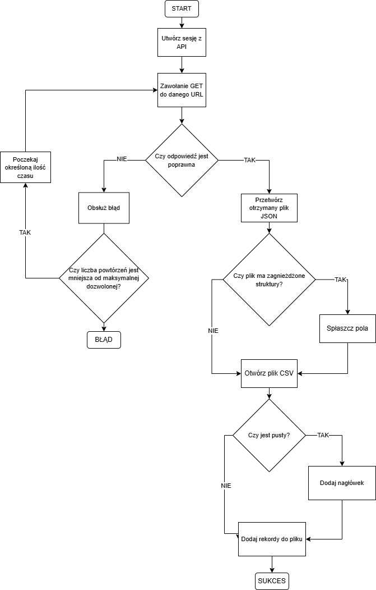

Implementacja
W tym rozdziale przedstawiono szczegółową implementację systemu, zgodnie z architekturą opisaną w poprzednim rozdziale. Rozdział został podzielony podrozdziały odpowiadające każdemu z modułów systemu. Każdy moduł został opisany pod względem wykorzystanych technologii, struktur kodu oraz sposobu działania.
3.1 Moduł źródła danych
Moduł źródła danych obejmuje wszystkie interfejsy programistyczne udostępniane przez Space Weather Prediction Center, które zostały wykorzystane w projekcie. Dane są udostępniane bezpłatnie i bez mechanizmów autoryzacji umożliwiając swobodny dostęp oraz pozyskiwanie danych. Wszystkie wykorzystywane punkty końcowe API zwracają dane w formacie JSON, co umożliwia ich ustrukturyzowane przetwarzanie. Wszystkie punkty końcowe API są dostępne pod adresem https://services.swpc.noaa.gov/json/, gdzie dane są na bieżąco aktualizowane. Większość pobieranych danych zawiera unikatowe pola dostępne tylko dla danego punktu końcowego. Istnieje jednak zbiór pól uniwersalnych np. time_tag, zawierający znacznik czasu umożliwiający unikatowe zidentyfikowanie danych. W ramach systemu wykorzystywane jest 20 różnych punktów końcowych API SWPC.
[
{
"time_tag": "2025-11-14T19:50:00Z",
"satellite": 18,
"flux": 647.32666015625,
"energy": "\u003E=1 MeV"
},
{
"time_tag": "2025-11-14T19:50:00Z",
"satellite": 18,
"flux": 5.15482759475708,
"energy": "\u003E=10 MeV"
}
]
Rys 3.1.1 Przykładowy format danych JSON zwracanych przez punkt końcowy API SWPC
3.2 Moduł pozyskiwania danych
Moduł pozyskiwania danych obejmuje wszystkie operacje związane z pobieraniem danych z modułu źródła danych. W celu spełnienia wymagań systemu dotyczących wydajności oraz sposobu pozyskiwania danych, są one pobierane asynchronicznie umożliwiając niemal jednoczesne przetwarzanie wielu punktów końcowych API. Dodatkowo każda operacja jest logowana w celu umożliwienia efektywnego rozwiązywania potencjalnych błędów wykonania. Przetwarzanie danych przychodzących rozpoczyna się od przygotowania miejsca przechowywania pobranych plików, w tym celu w przypadku braku docelowego katalogu zostanie on stworzony.
async def retrieve_data(target_name: str, url: str, target_dir: Union[str, Path] = SAVE_DIR):
"""
Retrieve a data for a specific url
:param target_name:
:param url:
:param target_dir:
:return:
"""
target_dir = Path(target_dir)
target_dir.mkdir(parents=True, exist_ok=True)
logger.log(f"Retrieving data from URL {url}")
Rys 3.2.1 Fragment kodu definiujący funkcję asynchroniczną oraz tworzącą docelowy katalog w przypadku jego braku
W dalszej części funkcji wykonywane jest odwołanie do aktualnie przetwarzanego punkt końcowego. W przypadku zwrócenia błędu przez API punkt końcowy zostaje ponownie odpytany o dane, dodatkowo wszystkie informacje o błędach zostają zapisane w celu identyfikacji potencjalnych błędów. W przypadku zwrócenia błędu jest on dodany do logów systemu, a następnie jeśli aktualna próba nie przekracza limitu dopuszczalnej ilości prób cały proces zostaje powtórzony.

Rys 3.2.2 Schemat przedstawiający pozyskiwanie danych
W dalszej części sprawdzana jest struktura zwróconych danych, a w przypadku zidentyfikowania danych zagnieżdżonych, ich odpowiedniego spłaszczenia, a następnie zapisania do odpowiedniego pliku wynikowego we wcześniej utworzonym katalogu docelowym. W celu umożliwienia ciągłego przepływu danych sprawdzana jest potencjalna zawartość pliku i w wypadku obecności zawartości jest ona dopisywana.
jeżeli dane zawierają zagnieżdżone słowniki:
zaloguj ostrzeżenie
spłaszcz dane
# Określ nazwę pliku wynikowego w katalogu docelowym
plik_wynikowy = target_dir / "{target_name}_{data_dzisiaj}.csv"
# Otwórz plik do dopisywania
jeżeli plik jest nowy:
zapisz nagłówki kolumn
dla każdego rekordu w danych:
zapisz wartości rekordu do pliku
zaloguj informację o zapisaniu danych do pliku
Rys 3.2.3 Pseudokod przedstawiający przetwarzanie i zapis danych do pliku csv
Po integracji powyższe fragmenty umożliwiają wydajne i niezawodne pobieranie danych pochodzących z modułu źródła danych zgodnie z wymaganiami opisanymi w poprzednim rozdziale.
async def retrieve_all_data():
"""
Retrieve all data from the URLs in NAME2URL
"""
tasks = []
target_dir = SAVE_DIR / f"{datetime.today().date()}"
for target_name, url in NAME2URL.items():
tasks.append(retrieve_data(target_name, url, target_dir))
await asyncio.gather(*tasks)
logger.log(f"All data retrieved and saved to {target_dir}")
Rys 3.2.4 Fragment kodu odpowiadający za pobieranie wszystkich danych z modułu źródła danych
3.3 Moduł archiwizacji danych
W module archiwizacji danych dane pobrane w poprzednim module są pakowane i kompresowane, a następnie wysyłane do katalogu w serwisie Dropbox w celu ich archiwizacji. Serwis Dropbox jest zintegrowany z systemem uwierzytelniania OAuth 2.0, przez co wymaga token odświeżania, który należy pozyskać ręcznie, wykonując proces jednorazowo przed pierwszym uruchomieniem systemu. Token odświeżania umożliwia długotrwałą autoryzację, bez potrzeby ponownego logowania, dzięki czemu jest elementem pasującym do założeń pełnej automatyzacji procesu.
def get_refresh_token(app_key, app_secret):
auth_flow = DropboxOAuth2FlowNoRedirect(
consumer_key=app_key,
consumer_secret=app_secret,
token_access_type='offline'
)
authorize_url = auth_flow.start()
print("1. Go to: " + authorize_url)
print("2. Click 'Allow' (you might have to log in first).")
print("3. Copy the authorization code.")
auth_code = input("Enter the authorization code here: ").strip()
oauth_result = auth_flow.finish(auth_code)
print("Access token:", oauth_result.access_token)
print("Refresh token:", oauth_result.refresh_token)
print("Expires in:", oauth_result.expires_at)
return oauth_result.refresh_token
Rys 3.3.1 Fragment kodu pozyskujący token odświeżania
Archiwizacja danych rozpoczyna się w po poprawnym pozyskaniu wszystkich wymaganych danych z API SWPC. Pierwszym krokiem jest kompresja i zapakowanie katalogów docelowych do formatu zip. Dodatkowo, możliwe jest usunięcie wcześniej utworzonego katalogu docelowego w celu opróżnienia przestrzeni dyskowej.
def compress_data(target_name: str, target_dir: Union[str, Path] = SAVE_DIR, remove_dir: bool = True):
"""
Compress the data directory into a zip file
:param target_name:
:param target_dir:
:param remove_dir:
:return:
"""
target_dir = Path(target_dir)
target_dir.mkdir(parents=True, exist_ok=True)
logger.log(f"Compressing data for {target_name}")
make_archive(
base_name=str(target_dir.parent / target_name),
format='zip',
root_dir=target_dir.parent,
base_dir=target_dir.name
)
if remove_dir:
logger.log(f"Removing directory {target_dir}")
rmtree(target_dir, ignore_errors=False)
logger.log(f"Directory {target_dir} removed")
Rys 3.2.2 Funkcja kompresująca katalog danych do formatu ZIP
Po utworzeniu archiwum zawierającego oczekiwane dane, są one wysyłane do serwisu Dropbox. W celu zapewnienia niezawodnego przesyłu danych zaimplementowane zostały systemy przetwarzania błędów oraz powtarzania procesu w przypadku błędu. Dodatkowo aby uniknąć nadmiernej liczby połączeń z serwerami Dropbox, przed każdym restartem system odczekuje wcześniej ustaloną ilość czasu.
otwórz plik ZIP
próby = 0
dopóki próby < MAX_RETRIES:
spróbuj przesłać plik do Dropbox
jeżeli przesył zakończony sukcesem:
zaloguj sukces
zakończ
jeżeli wystąpi błąd API lub uwierzytelnienia:
zaloguj wyjątek
zwiększ próby
poczekaj SEND_RETRY_SLEEP_TIME
jeżeli plik nie został wysłany po MAX_RETRIES:
zaloguj błąd
zgłoś wyjątek
Rys 3.3.3 Pseudokod przedstawiający proces wysyłania danych do serwisu Dropbox
Po integracji powyższe elementy umożliwiają spełnienie założeń modułu archiwizacji danych poprzez efektywne pakowanie, kompresowanie i archiwizowanie danych pobranych w poprzednim module.
compress_data(target_dir.name, target_dir)
logger.log(f"Data compressed to {target_dir}.zip")
send_to_Dropbox(target_dir.parent / f"{target_dir.name}.zip", f"{Dropbox_DIR}/{target_dir.name}.zip", logger)
Rys 3.3.4 Fragment kodu przedstawiający integrację elementów opisywanego modułu
3.4 Moduł przetwarzania danych
W module przetwarzania danych zarchiwizowane dane są pobierane z serwisu Dropbox oraz przygotowywane w celu umożliwienia ich zapisu do bazy danych. Pierwszym etapem procesu jest pobranie skompresowanego i zapakowanego archiwum zip, które jest następnie rozpakowywane. W celu umożliwienia wysokiej elastyczności system umożliwia pobranie całego zapakowanego katalogu, jak i pojedynczego pliku. Dzięki temu, możliwe jest pobranie wszystkich dostępnych archiwów przy użyciu wspólnej funkcjonalności, a także pobranie archiwum dla pojedynczej daty.
jeżeli podano targetDate:
sprawdź zawartość katalogu "/inzynierka" w Dropbox
jeżeli nie można odczytać katalogu:
downloadPath = "/inzynierka/" + targetDate + ".zip"
w przeciwnym razie:
sprawdź, czy istnieje plik ZIP lub folder odpowiadający targetDate
jeśli nie znaleziono ani pliku, ani folderu:
zgłoś błąd
w przeciwnym razie:
downloadPath = "/inzynierka"
Rys 3.4.1 Pseudokod przedstawiający logikę określania ścieżki pobrania danych
Po ustaleniu oczekiwanej ścieżki dla danych następuje proces pobierania właściwych danych. W zależności od rodzaju ścieżki logika pobierania różni się, dla pojedynczej daty oraz dla całego katalogu archiwów. Po wywołaniu odpowiedniej metody z pakietu github.com/Dropbox/Dropbox-sdk-go-unofficial/v6/Dropbox dane zostają przekazane do funkcjonalności ekstrakcji zarchiwizowanych danych.
jeżeli downloadPath wskazuje plik ZIP:
pobierz plik ZIP z Dropbox
zapisz zawartość do pliku tymczasowego
w przeciwnym razie:
pobierz cały katalog ZIP z Dropbox
zapisz zawartość do pliku tymczasowego
Rys 3.4.2 Pseudokod pokazujący logikę pobierania danych do pliku tymczasowego
Pierwszym krokiem ekstrakcji danych jest przeniesienie zawartości zwróconej z wyżej wymienionego pakietu do odpowiedniego katalogu tymczasowego. W tym celu system sprawdza, czy docelowy katalog istnieje, w takim przypadku cały proces jest pomijany w celu zaoszczędzenia zasobów, lub czy docelowy katalog został przekazany jako ścieżka do pliku, w tym przypadku zostaje zwrócony błąd.
jesli katalog danych istnieje:
zaloguj wiadomość
przerwij przetwarzanie
utwórz plik tymczasowy
zapisz pobrane dane do pliku tymczasowego
Rys 3.4.3 Pseudokod przedstawiający proces tworzenia i wypełniania pliku tymczasowego
Kolejnym krokiem jest właściwe wypakowywanie zawartości archiwum pobranej do katalogu tymczasowego, w tym celu tworzony jest katalog docelowy ekstrakcji do którego zapisywane są kolejne odpakowane pliki. Moduł obsługuje również archiwa zagnieżdżone, co zapewnia poprawne przetwarzanie nietypowych przypadków danych wejściowych.
reader, err := zip.OpenReader(zipFilePath)
if err != nil {
return fmt.Errorf("unable to open ZIP archive: %w", err)
}
defer reader.Close()
for _, f := range reader.File {
if f.FileInfo().IsDir() {
continue
}
src, err := f.Open()
if err != nil {
return fmt.Errorf("cannot open file '%s': %w", f.Name, err)
}
defer src.Close()
dest := filepath.Join(extractionDir, filepath.Base(f.Name))
dst, err := os.Create(dest)
if err != nil {
return fmt.Errorf("cannot create '%s': %w", dest, err)
}
io.Copy(dst, src)
dst.Close()
}
Rys 3.4.4 Fragment kodu odpowiedzialny za rozpakowywanie zarchiwizowanych plików do katalogu docelowego ekstrakcji
Przedstawiony moduł umożliwia automatyczne pobieranie, weryfikację i ekstrakcję danych archiwalnych z serwisu Dropbox. Dzięki obsłudze zarówno pojedynczych plików, jak i całych katalogów, moduł charakteryzuje się wysoką elastyczność oraz skalowalnością w procesie pozyskiwania danych wejściowych.
3.5 Moduł dodawania danych do bazy danych
Moduł dodawania danych do bazy danych odpowiada za przetworzenie dostępnych danych i dodanie ich do określonej przy pomocy zmiennych środowiskowych bazy danych. W systemie dane wysyłane są do bez serwerowej bazy PostgreSQL, Neon. Wszystkie tabele wykorzystywane w bazie danych zostały zdefiniowane jako modele pakietu Gorm, co umożliwiło dostęp do szeregu funkcjonalności ułatwiających obsługę danych. Na tym etapie zostają wybrane pliki wykorzystywane w wizualizacji danych, jedynie zdefiniowane modele trafią do bazy danych, umożliwiając ich wizualizację.
type BoulderKIndex1m struct {
ID uint `gorm:"primaryKey"`
TimeTag time.Time `gorm:"uniqueIndex;type:timestamp(0)"`
KIndex float32 `gorm:"type:real"`
}
Rys 3.5.1 Przykładowy model użyty w systemie
W modelu przedstawionym na rysunku 3.5.1 zdefiniowane zostały zarówno pola, ich typy i ograniczenia nałożone na opisywaną tabelę.
Pierwszym krokiem modułu jest inicjalizacja bazy danych, która odbywa się poprzez automatyczną migrację wszystkich modeli, umożliwia to obsługę przypadków powtórnego, jak i pierwszorazowego zapisu danych, ponieważ tabele tworzone są tylko w przypadku nieistnienia tabel.
ustaw DB_HOST, DB_USER, DB_PASSWORD, DB_NAME, DB_PORT ze zmiennych środowiskowych lub użyj wartości domyślnych
połącz się z bazą danych przy użyciu DSN
jeśli połączenie się nie powiodło:
zgłoś błąd
wykonaj AutoMigrate dla wszystkich wymaganych tabel
jeśli migracja się nie powiodła:
zgłoś błąd
wyświetl komunikat o sukcesie
zwróć obiekt bazy danych
Rys 3.5.2 Pseudokod przedstawiający inicjalizację bazy danych
Kolejnym krokiem opisywanego modułu jest przetworzenie danych uzyskanych dla danych dostępnych w katalogu otrzymanym w procesie ekstrakcji. Etap ten jest właściwym etapem zapisu danych, dla każdego wczytanego pliku dopasowywany zostaje odpowiedni model, który następnie jest przetwarzany i zapisywany. W celu uniknięcia duplikatów danych każda operacja zapisu niezależnie od jej wyniku wywołuje zapis informacji w oddzielnej tabeli przechowującej unikatowe rekordy dla każdego przetwarzanego dnia. Dzięki tej funkcjonalności system jest w stanie zapobiec duplikowaniu danych oraz marnowania zasobów.
dla każdej daty w katalogu danych:
jeżeli data nie jest zgodna z formatem:
pomiń
jeżeli targetdate jest określony i nie pasuje do daty:
pomiń
jeżeli data została już przetworzona:
pomiń lub zakończ (jeśli targetdate)
dla każdego pliku csv w katalogu daty:
jeżeli plik jest wykluczony:
pomiń
właduj dane z pliku
zapisz dane do odpowiedniej tabeli w bazie
zapisz informację o zakończonym przetwarzaniu daty w logu
jeżeli targetdate był określony:
zakończ funkcję
jeżeli targetdate był określony i nie znaleziono go:
zgłoś błąd
Rys 3.5.3 Pseudokod przedstawiający przetwarzanie zapisu danych dziennych do bazy danych
Przedstawiony moduł umożliwia efektywny i niezawodny zapis danych do bazy danych, a także tworzenie struktury tabel, w przypadku jego braku.
3.6 Moduł wizualizacji danych
Moduł wizualizacji danych przedstawia dane pozyskane i przetworzone w postaci interaktywnych wykresów umożliwiających analizę zjawisk pogody kosmicznej.
Moduł został podzielony na mniejsze podmoduły, każdy przedstawiający osobne zjawisko. Każdy podmoduł pobiera dane z bazy danych, które zostają zapisywane do pamięci podręcznej trzymającej pobrane dane do 10 minut. Dzięki temu zabiegowi czas ładowania wykresów i obciążenie bazy danych zostały zredukowane wpływając pozytywnie na wydajność modułu.
def read_table(table_name: str, limit: int | None = None, ttl_seconds: int | None = None, force_refresh: bool = False) -> pd.DataFrame:
"""
Read data from a table
:param table_name:
:param limit:
:param ttl_seconds:
:param force_refresh:
:return:
"""
if not table_name:
return pd.DataFrame()
key = (table_name, limit)
# memory cache
if not force_refresh and key in _MEM_CACHE:
entry = _MEM_CACHE[key]
if ttl_seconds is None or (datetime.now() - entry['ts']).total_seconds() <= ttl_seconds:
return entry['df'].copy()
if engine is None:
raise RuntimeError("DB engine not configured")
# query data
q = f'SELECT * FROM "{table_name}"' + (f" LIMIT {limit}" if limit else "")
df = pd.read_sql(text(q), con=engine)
df.columns = [c.lower() for c in df.columns]
for c in df.columns:
if _is_time_like(c):
try: df[c] = pd.to_datetime(df[c])
except: pass
_MEM_CACHE[key] = {'ts': datetime.now(), 'df': df.copy()}
return df
@st.cache_data(ttl=600)
def _load_table_cached(name, limit):
return read_table(name, limit=limit)
Rys 3.6.1 Fragment kodu przedstawiający pełną funkcjonalność ładowania danych wraz z pamięcią podręczną
Każdy z podmodułów zawiera zestaw interaktywnych wykresów opisujących wybrane parametry danego zjawiska, wraz z dokładnymi opisami przedstawianych wykresów. Dzięki temu każde zjawisko może zostać dokładnie przedstawione i przeanalizowane, nawet przez osoby niezaznajomione z teoria danych zjawisk.

Rys 3.6.2 Schemat przedstawiający sposób integracji wszystkich podmodułów
Na rysunku 3.6.2 przedstawiono metodę integracji poszczególnych podmodułów. Po wybraniu danego zjawiska pogody kosmicznej z paska bocznego generowana jest strona zawierająca wszystkie elementy potrzebne do analizy wybranego zjawiska. W przypadku braku wybranego zjawiska na stronie pojawi się komunikat z błędem. Opisany sposób integracji pozwala na jednoczesne przetwarzanie jednej tabeli, co przekładana się na zwiększoną wydajność i dostępność spełniając założenia projektowe.
3.7 Integracja modułów
Opisane wyżej moduły zostały zintegrowane w trzy bloki:
- blok zbierania danych
- blok zapisu danych do bazy danych
- blok wizualizacji danych
Pierwszy blok zawiera moduły źródła danych, pozyskiwania danych i archiwizacji danych, natomiast drugi blok zawiera moduł przetwarzania danych i dodawania danych do bazy danych. W celu umożliwienia nieprzerwanego i niezawodnego pobierania i zapisywania danych stworzony został potok danych(ang. pipeline) działający codziennie o godzinie 18.40 czasu Polskiego, co umożliwiło ustawienie stosownego cron-jobu. Struktura potoku danych została oparta o technologię konteneryzacji (Docker) umożliwiając jej skalowanie i przenoszenie na inne platformy. Po wykonaniu dwóch pierwszych bloków na adres mailowy ustawiony w konfiguracji potoku zostaje wysłana informacja zawierająca status wykonania bloków. Jest to element monitorowania potoku, który usprawnia proces ewentualnego wykrywania błędów i restartowania potoku.

Rys 3.7.1 potok danych wykorzystywany w projekcie
Ostatni blok składa się tylko z ostatniego modułu, który działa w chmurze udostępnionej przez Streamlit Community. Dzięki temu zabiegowi wizualizacja danych jest szeroko dostępna i nie wymaga żadnych ustawień z perspektywy użytkownika końcowego. Dodatkowo, konfiguracja bloku wizualizacji wymaga jedynie określenia zmiennych środowiskowych zawierających informacje odnośnie połączenia do bazy danych, a wszelkie zmiany zawartości tabel są odzwierciedlana w czasie rzeczywistym na wykresach.